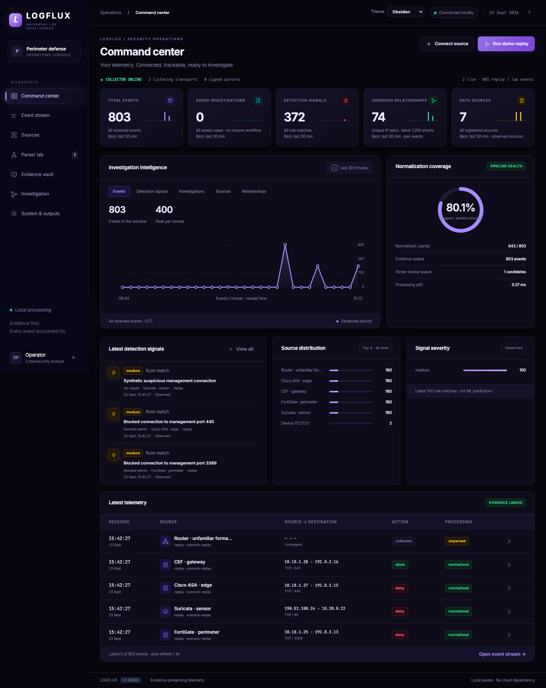

01 / LOG INTEGRITY
LOGFLUX.
Evidence-preserving log processing.
Log ingestion and normalization with signed, human-reviewed parser adaptation. Original bytes stay preserved as analysts inspect events, investigate cases, and verify evidence.
My contribution Backend security, integrity and APIs within a four-person team.

Application capture · synthetic demonstration data
900,000Events durably verified
15,000 / sec60-second broker/evidence run
Project-level acceptance results from the documented configuration. Corpus coverage and throughput do not imply detection accuracy.